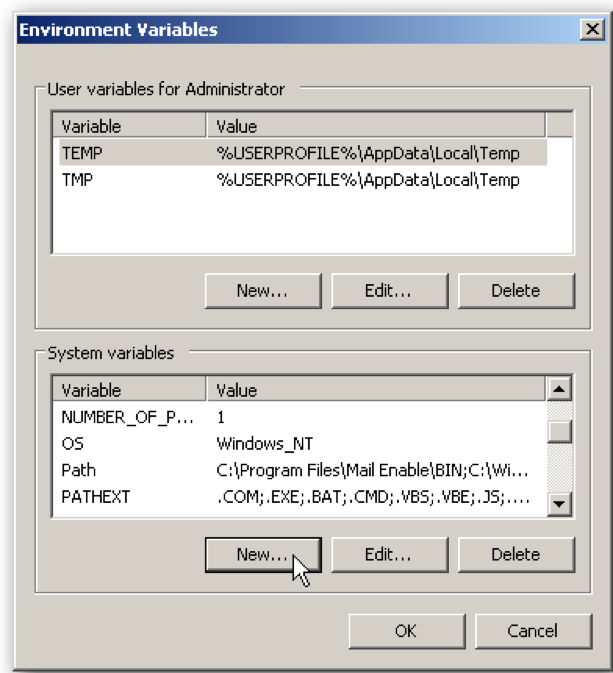

Installation Instructions
This library is designed to be as simple as possible to install.
As long as the rwbatools folder is in Python's path, you are good to go.
Preparing the library
All installations start the same:
- Download the ZIP file.
- Unzip it.
- Make sure the folder is called
rwbatools(it might be called rwbatools-master if you got it from github) - Put the folder in a sensible place
~/Documents/PYLIB/
Now, it's ready to go, at the top of your code, you can include the following:
# add the rwbatools folder to your PATH
import sys
sys.path.append("~/Documents/PYLIB") # replce this with the correct path
# import the library
from rwbatools import gui
If you want a more permanent solution, you can add the above folder to your path. See below.
Windows Installation
- Open Control Panel
- Navigate to System -> Advanced System Settings

- Click the Advanced tab

- Under System vartiables, click the New.. button 
- Set the Variable name: to be PYTHONPATH
- Set the Path: as the folder you put rwbatools in (eg. c:\COMPUTINC\PYLIB")

- Press OK, and you're ready to go:
Linux Installation
- Launch a Terminal
- Type the following:
echo 'export PYTHONPATH="${PYTHONPATH}:~Documents/PYLIB"' >> ~/.bashrc
- Close the terminal, and you're ready to go
MAC Installation
- It's a little trickier on MAC
- First off, run the Linux installation above. That will make it available form the command line.
- In OSX<=10.9:
- Edit the
/etc/launchd.conffile - Add the line:
setenv PYTHONPATH /Users/myname/Documents/PYLIB - And you're done
- Edit the
Using the library
If the rwbatools folder is in your path, you can access it simply though an import:
# import the library
from rwbatools import gui